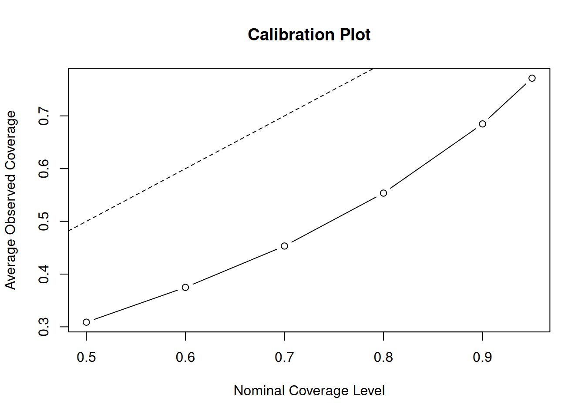
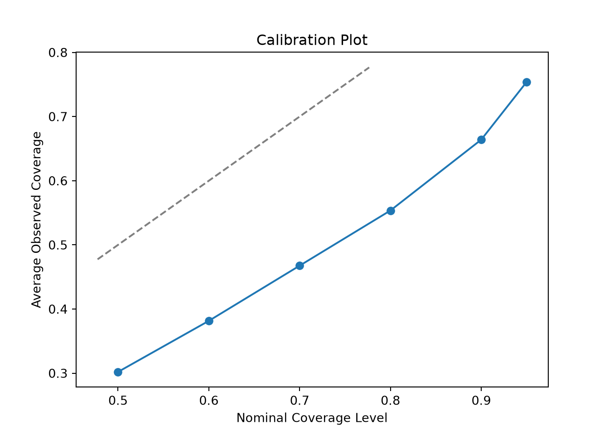
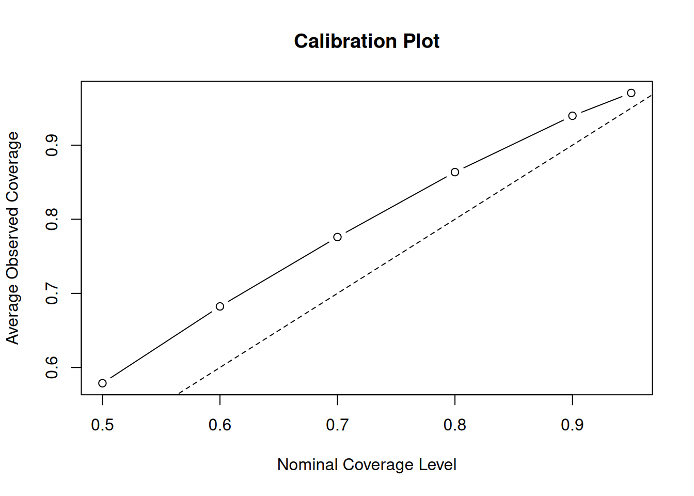
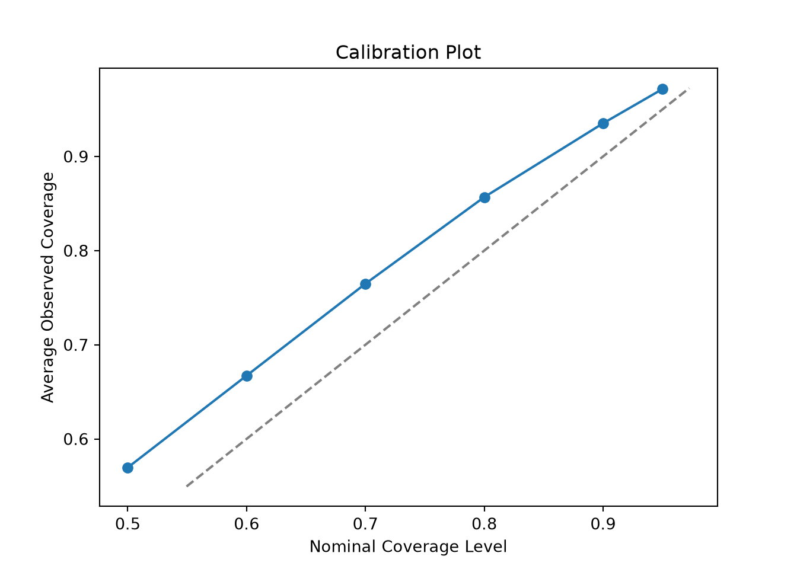
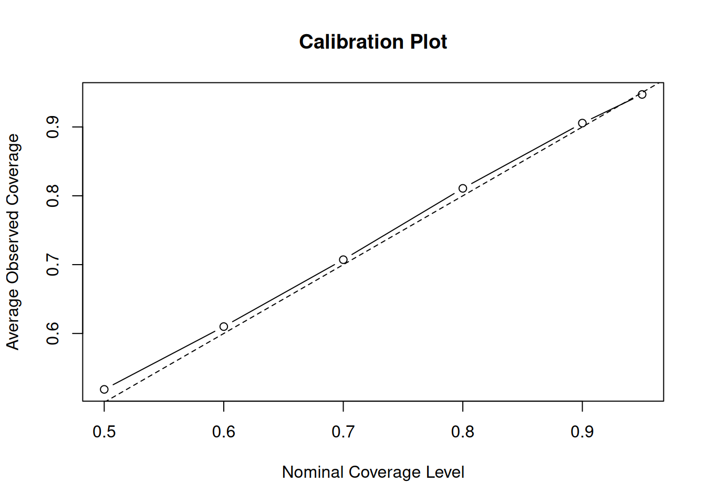
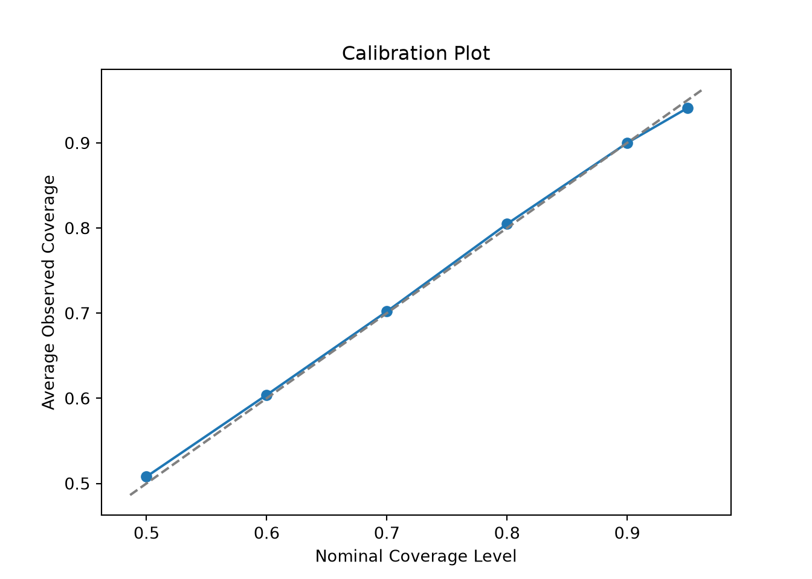

library(stochtree)Calibrating StochTree Model Parameters
Introduction
stochtree exposes many user-facing modeling parameters. Even for a simple BART model, users can specify
- how many trees in the forest,
- prior split parameters \(\alpha\) and \(\beta\),
- how to initialize the leaf scale parameter and whether to sample it,
- max depth of each tree, and
- minimum size of a leaf node.
We have made every effort to set experience-informed defaults or calibration procedures for each of these options so that stochtree will largely work “out of the box,” but it’s nonetheless reasonable to wonder how good these parameters are for a given data-generating process.
In this vignette, we’ll walkthrough a simple example of how one might go about evaluating (and updating) their BART model’s hyperparameters.
Framework
Broadly, our procedure is
Define a data-generating process (DGP), with careful attention to: (1) sample size (\(n\)), (2) feature dimensionality (\(p\)), (3) outcome mean function (sparsity of features, nonlinearity), and (4) signal-to-noise ratio. These aspects should be chosen based on their resemblance to a dataset of interest.
Pick a number, \(mc\), of replicates to draw of this DGP. Fix BART hyperparameters \(\alpha\), \(\beta\), \(m\) trees, max depth, min samples in a leaf, etc…
Specify a range of interval probabilities (i.e. \(r = \left\{0.50, 0.75, 0.90, 0.95\right\}\))
For \(i\) in \(\left\{1,\dots,mc\right\}\):
Draw a dataset \(y, X\) from the DGP defined above
Split the dataset into train and test sets
Sample a BART model of \(y \sim \mathcal{N}(f(X),\sigma^2)\) with hyperparameters \(\alpha\), \(\beta\), \(m\), ….
Compute test set coverage of true \(f(X)\) for intervals defined by the probabilities in \(r\)
Compute average coverage across \(mc\) replications for each probability in \(r\)
Plot average coverage against expected coverage \(r\)
This plot should be roughly diagonal for a well-calibrated BART model, so we can use it to evaluate and refine hyperparameters.
Demo
We now illustrate this procedure with a simple continuous outcome BART demo. We start by importing the necessary packages.
from typing import Union
import pandas as pd
import numpy as np
import matplotlib.pyplot as plt
from stochtree import BARTModelSet a seed for reproducibility
random_seed = 1234
set.seed(random_seed)random_seed = 1234
rng = np.random.default_rng(random_seed)Data Generation
Let’s define a sparse, nonlinear DGP with additive Gaussian errors
\[ \begin{aligned} y &\sim \mathcal{N}\left(f(X), \sigma^2\right)\\ X_1, \dots, X_p &\sim \text{U}\left(0,1\right), \quad p > 5\\ f(X) &= 5 \sin(2 \pi X_1) + g(X_2, X_3) - 2 X_4 X_5\\ g(X_2, X_3) &= \begin{cases} -3 & \text{if } X_2 \leq 0.5 \text{ and } X_3 \leq 0.5 \\ -1 & \text{if } X_2 \leq 0.5 \text{ and } X_3 > 0.5 \\ -1 & \text{if } X_2 > 0.5 \text{ and } X_3 \leq 0.5 \\ 3 & \text{if } X_2 > 0.5 \text{ and } X_3 > 0.5 \\ \end{cases}\\ \sigma^2 &= \text{Var}(f(X)) / a^2 \end{aligned} \]
where \(a\) is a scaling factor that determines the signal-to-noise ratio.
continuous_dgp <- function(X) {
g <- function(x) {
ifelse(
x[, 2] <= 0.5 & x[, 3] <= 0.5,
-3,
ifelse(
x[, 2] <= 0.5 & x[, 3] > 0.5,
-1,
ifelse(x[, 2] > 0.5 & x[, 3] <= 0.5, -1, 3)
)
)
}
5 * sin(2 * pi * X[, 1]) + g(X) - 2 * X[, 4] * X[, 5]
}
generate_data <- function(n, p, snr, mean_fn) {
if (p < 5) {
stop("p must be at least 5")
}
if (n < 1) {
stop("n must be at least 1")
}
if (snr <= 0) {
stop("snr must be positive")
}
X <- matrix(runif(n * p), ncol = p)
f_X <- mean_fn(X)
eps <- rnorm(n, mean = 0, sd = sqrt(var(f_X) / snr))
y <- f_X + eps
list(X = X, f_X = f_X, y = y)
}def continuous_dgp(X):
def g(x):
return np.where(
(x[:, 1] <= 0.5) & (x[:, 2] <= 0.5),
-3,
np.where(
(x[:, 1] <= 0.5) & (x[:, 2] > 0.5),
-1,
np.where((x[:, 1] > 0.5) & (x[:, 2] <= 0.5), -1, 3),
),
)
return 5 * np.sin(2 * np.pi * X[:, 0]) + g(X) - 2 * X[:, 3] * X[:, 4]
def generate_data(n, p, snr, mean_fn):
if p < 5:
raise ValueError("p must be at least 5")
if n < 1:
raise ValueError("n must be at least 1")
if snr <= 0:
raise ValueError("snr must be positive")
X = rng.uniform(size=(n, p))
f_X = mean_fn(X)
eps = rng.normal(loc=0, scale=np.sqrt(np.var(f_X) / snr), size=n)
y = f_X + eps
return X, f_X, yAnd we define helper functions to perform train/test splits
compute_test_train_indices <- function(n, test_set_pct) {
n_test <- round(test_set_pct * n)
n_train <- n - n_test
test_inds <- sort(sample(1:n, n_test, replace = FALSE))
train_inds <- (1:n)[!((1:n) %in% test_inds)]
return(list(test_inds = test_inds, train_inds = train_inds))
}
subset_data <- function(data, subset_inds) {
if (is.matrix(data)) {
return(data[subset_inds, ])
} else {
return(data[subset_inds])
}
}def compute_test_train_indices(n, test_set_pct):
n_test = round(test_set_pct * n)
test_inds = np.sort(rng.choice(n, size=n_test, replace=False))
train_inds = np.setdiff1d(np.arange(n), test_inds)
return test_inds, train_inds
def subset_data(
data: Union[np.array, pd.DataFrame], subset_inds: np.array
) -> Union[np.array, pd.DataFrame]:
if data.ndim == 2:
if isinstance(data, np.ndarray):
return data[subset_inds, :]
else:
return data.iloc[subset_inds, :]
else:
return data[subset_inds]Simulation
Now, we run the simulation procedure described above to assess the calibration of the model. Let’s define a helper function that runs the procedure end-to-end, producing a vector of coverage results for each interval level.
run_coverage_simulation <- function(
n,
p,
snr,
num_gfr,
num_burnin,
num_mcmc,
num_trees,
max_depth,
mc,
interval_levels,
mean_fn
) {
# Simulation
coverage_results <- matrix(
NA_real_,
nrow = mc,
ncol = length(interval_levels)
)
for (i in 1:mc) {
# Generate data
data <- generate_data(n, p, snr, mean_fn = mean_fn)
X <- data$X
f_X <- data$f_X
y <- data$y
# Split into train and test sets
indices <- compute_test_train_indices(n, test_set_pct = 0.2)
test_inds <- indices$test_inds
train_inds <- indices$train_inds
X_train <- subset_data(X, train_inds)
X_test <- subset_data(X, test_inds)
f_X_train <- subset_data(f_X, train_inds)
f_X_test <- subset_data(f_X, test_inds)
y_train <- subset_data(y, train_inds)
y_test <- subset_data(y, test_inds)
# Fit BART
bart_model <- bart(
X_train = X_train,
y_train = y_train,
num_gfr = num_gfr,
num_burnin = num_burnin,
num_mcmc = num_mcmc,
general_params = list(random_seed = random_seed + i),
mean_forest_params = list(num_trees = num_trees, max_depth = max_depth)
)
# Compute intervals
level_idx <- 1
for (level in interval_levels) {
# Compute intervals for each level
yhat_test_interval <- computeBARTPosteriorInterval(
bart_model,
level = level,
terms = "y_hat",
X = X_test
)
yhat_test_interval_lb <- yhat_test_interval$lower
yhat_test_interval_ub <- yhat_test_interval$upper
# Compute average mean function coverage
cover <- mean(
f_X_test >= yhat_test_interval_lb & f_X_test <= yhat_test_interval_ub
)
coverage_results[i, level_idx] <- cover
level_idx <- level_idx + 1
}
}
return(apply(coverage_results, 2, mean))
}def run_coverage_simulation(
n,
p,
snr,
num_gfr,
num_burnin,
num_mcmc,
num_trees,
max_depth,
mc,
interval_levels,
mean_fn,
):
coverage_results = np.empty((mc, len(interval_levels)))
# Simulation
for i in range(mc):
# Generate data
X, f_X, y = generate_data(n, p, snr, mean_fn=mean_fn)
# Split into train and test sets
test_inds, train_inds = compute_test_train_indices(n, test_set_pct=0.2)
X_train = subset_data(X, train_inds)
X_test = subset_data(X, test_inds)
f_X_train = subset_data(f_X, train_inds)
f_X_test = subset_data(f_X, test_inds)
y_train = subset_data(y, train_inds)
y_test = subset_data(y, test_inds)
# Fit BART
bart_model = BARTModel()
bart_model.sample(
X_train=X_train,
y_train=y_train,
num_gfr=num_gfr,
num_burnin=num_burnin,
num_mcmc=num_mcmc,
general_params={"random_seed": random_seed + i},
mean_forest_params={"num_trees": num_trees, "max_depth": max_depth},
)
# Compute intervals
for level_idx, level in enumerate(interval_levels):
# Compute intervals for each level
yhat_test_interval = bart_model.compute_posterior_interval(
level=level, terms="y_hat", X=X_test
)
yhat_test_interval_lb = yhat_test_interval["lower"]
yhat_test_interval_ub = yhat_test_interval["upper"]
# Compute average mean function coverage
cover = np.mean(
(f_X_test >= yhat_test_interval_lb)
& (f_X_test <= yhat_test_interval_ub)
)
coverage_results[i, level_idx] = cover
return np.mean(coverage_results, axis=0)We start with a simple BART model with 10 decision trees each with a maximum depth of 3.
# Data generating process parameters
n <- 250
p <- 50
snr <- 2
# Modeling parameters
num_gfr <- 5
num_burnin <- 100
num_mcmc <- 500
num_trees <- 10
max_depth <- 3
# Simulation setup
mc <- 50
interval_levels <- c(0.5, 0.6, 0.7, 0.8, 0.9, 0.95)
# Run simulation
average_coverage_rates <- run_coverage_simulation(
n,
p,
snr,
num_gfr,
num_burnin,
num_mcmc,
num_trees,
max_depth,
mc,
interval_levels,
mean_fn = continuous_dgp
)# Data generating process parameters
n = 250
p = 50
snr = 2
# Modeling parameters
num_gfr = 5
num_burnin = 100
num_mcmc = 500
num_trees = 10
max_depth = 3
# Simulation setup
mc = 50
interval_levels = [0.5, 0.6, 0.7, 0.8, 0.9, 0.95]
# Run simulation
average_coverage_rates = run_coverage_simulation(
n,
p,
snr,
num_gfr,
num_burnin,
num_mcmc,
num_trees,
max_depth,
mc,
interval_levels,
mean_fn=continuous_dgp,
)Now, we plot the average observed coverage against the nominal coverage level
plot(
interval_levels,
average_coverage_rates,
type = "b",
xlab = "Nominal Coverage Level",
ylab = "Average Observed Coverage",
main = "Calibration Plot"
)
abline(0, 1, lty = 2)
fig, ax = plt.subplots()
ax.plot(interval_levels, average_coverage_rates, marker='o')
ax.set_xlabel("Nominal Coverage Level")
ax.set_ylabel("Average Observed Coverage")
ax.set_title("Calibration Plot")
lims = [max(ax.get_xlim()[0], ax.get_ylim()[0]), min(ax.get_xlim()[1], ax.get_ylim()[1])]
ax.plot(lims, lims, linestyle='--', color='gray')
plt.show()
Clearly, this is quite off. The posterior intervals are too narrow at every nominal coverage probability. Let’s try increasing the number of trees to 200 and the max depth to 10.
# Data generating process parameters
n <- 250
p <- 50
snr <- 2
# Modeling parameters
num_gfr <- 5
num_burnin <- 100
num_mcmc <- 500
num_trees <- 200
max_depth <- 10
# Simulation setup
mc <- 50
interval_levels <- c(0.5, 0.6, 0.7, 0.8, 0.9, 0.95)
# Run simulation
average_coverage_rates <- run_coverage_simulation(
n,
p,
snr,
num_gfr,
num_burnin,
num_mcmc,
num_trees,
max_depth,
mc,
interval_levels,
mean_fn = continuous_dgp
)# Data generating process parameters
n = 250
p = 50
snr = 2
# Modeling parameters
num_gfr = 5
num_burnin = 100
num_mcmc = 500
num_trees = 200
max_depth = 10
# Simulation setup
mc = 50
interval_levels = [0.5, 0.6, 0.7, 0.8, 0.9, 0.95]
# Run simulation
average_coverage_rates = run_coverage_simulation(
n,
p,
snr,
num_gfr,
num_burnin,
num_mcmc,
num_trees,
max_depth,
mc,
interval_levels,
mean_fn=continuous_dgp,
)Now, we plot the average observed coverage against the nominal coverage level
plot(
interval_levels,
average_coverage_rates,
type = "b",
xlab = "Nominal Coverage Level",
ylab = "Average Observed Coverage",
main = "Calibration Plot"
)
abline(0, 1, lty = 2)
fig, ax = plt.subplots()
ax.plot(interval_levels, average_coverage_rates, marker='o')
ax.set_xlabel("Nominal Coverage Level")
ax.set_ylabel("Average Observed Coverage")
ax.set_title("Calibration Plot")
lims = [max(ax.get_xlim()[0], ax.get_ylim()[0]), min(ax.get_xlim()[1], ax.get_ylim()[1])]
ax.plot(lims, lims, linestyle='--', color='gray')
plt.show()
This is much better but now we have the opposite problem — intervals are slightly conservative (wider than their nominal coverage probability). Let’s try reducing the number of trees to 50.
# Data generating process parameters
n <- 250
p <- 50
snr <- 2
# Modeling parameters
num_gfr <- 5
num_burnin <- 100
num_mcmc <- 500
num_trees <- 50
max_depth <- 10
# Simulation setup
mc <- 50
interval_levels <- c(0.5, 0.6, 0.7, 0.8, 0.9, 0.95)
# Run simulation
average_coverage_rates <- run_coverage_simulation(
n,
p,
snr,
num_gfr,
num_burnin,
num_mcmc,
num_trees,
max_depth,
mc,
interval_levels,
mean_fn = continuous_dgp
)# Data generating process parameters
n = 250
p = 50
snr = 2
# Modeling parameters
num_gfr = 5
num_burnin = 100
num_mcmc = 500
num_trees = 50
max_depth = 10
# Simulation setup
mc = 50
interval_levels = [0.5, 0.6, 0.7, 0.8, 0.9, 0.95]
# Run simulation
average_coverage_rates = run_coverage_simulation(
n,
p,
snr,
num_gfr,
num_burnin,
num_mcmc,
num_trees,
max_depth,
mc,
interval_levels,
mean_fn=continuous_dgp,
)Now, we plot the average observed coverage against the nominal coverage level
plot(
interval_levels,
average_coverage_rates,
type = "b",
xlab = "Nominal Coverage Level",
ylab = "Average Observed Coverage",
main = "Calibration Plot"
)
abline(0, 1, lty = 2)
fig, ax = plt.subplots()
ax.plot(interval_levels, average_coverage_rates, marker='o')
ax.set_xlabel("Nominal Coverage Level")
ax.set_ylabel("Average Observed Coverage")
ax.set_title("Calibration Plot")
lims = [max(ax.get_xlim()[0], ax.get_ylim()[0]), min(ax.get_xlim()[1], ax.get_ylim()[1])]
ax.plot(lims, lims, linestyle='--', color='gray')
plt.show()
With 50 trees, coverage is nearly perfect — this configuration is well-calibrated for this DGP.
This is a relatively straightforward demo of how we can calibrate priors based on a target data generating process.